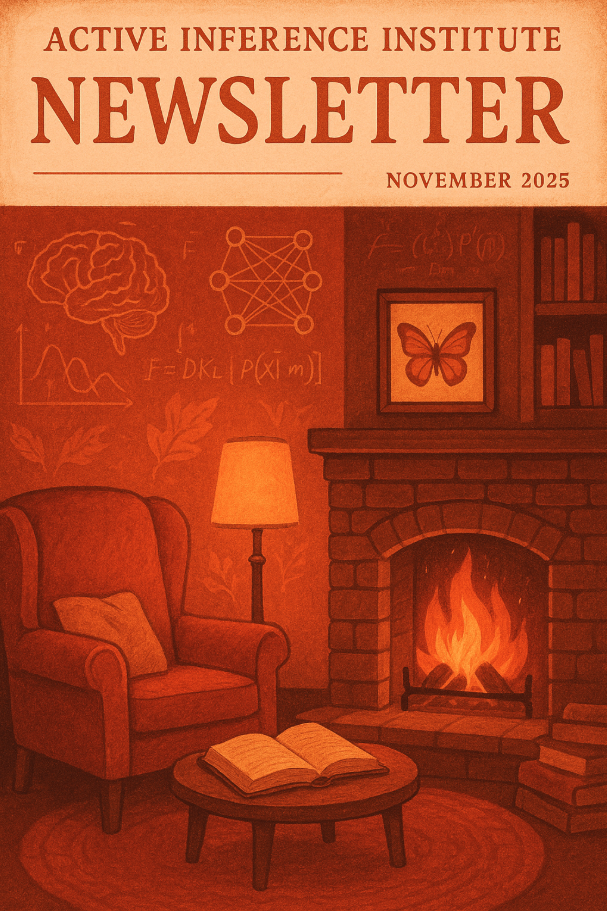

Numero completo
contenuto della newsletter
Questa pagina conserva il testo dell'archivio della newsletter, i link pubblici e i media.
Active Inference Education Participation Research Newsletter
- Published
- Format
- Newsletter
We are nearing the end of an exciting 2025. Regular project activities will be paused during December and will resume in January 2026! Read on for end-of-year updates and some previews on how you can engage next year.
Support the Institute
Throughout the history of the Institute, all activities, programs, and products have been provided open source and without any financial barriers to participation. Donate to the Institute to support our work and sustainability in the years to come. Contact us with other philanthropic and grant ideas.
End of Year Updates
We would love to include your updates in the December Newsletter and the Quarterly Roundtable. Please use the Measurement form for providing updates on your (research, learning, application) work, by December 17th.
Applied Active Inference Symposium
The 5th Applied Active Inference Symposium was our best yet — 45+ presenters giving 30+ hours of sessions covering various facets of Active Inference such as industrial uses across domains, tool development, educational experiences, games, embodiment, philosophy, and more.
Didn’t catch it live on Nov 12-14? See all recorded sessions here, with timestamps for each session, as well as the Abstract book, and the GitHub Repo. Great thanks to our co-organizers and Sponsors for the Symposium. All information at
https://symposium.activeinference.institute/
Are you interested to help co-organize the 2026 Applied Active Inference Symposium? Co-organizing is a streamlined, impactful way to contribute to the flourishing of the field and ecosystem. We can get started early in the year, to ensure next year’s program, sponsorship, and reach are all according to our preferences. Email us with subject line [SYMPOSIUM] if interested.
Welcome to New Research Fellows: Hongju Pae and Sheila Macrine
We are pleased to announce that two new Research Fellows have been accepted: Hongju Pae and Sheila Macrine.
Hongju is working on computational and theoretical frameworks for modeling how artificial agents form perspective, maintain coherent affect, and achieve developmental alignment. Hongju’s work integrates the Active Inference framework with phenomenological insights to identify computable markers of subjective experience and to distinguish proto-conscious agency from general intelligence.
Sheila is extending the theoretical framework developed in her forthcoming book, Embodied Intelligence: Multidisciplinary Perspectives on Natural, Artificial, and Hybrid Systems (MIT Press, 2026). Sheila’s research proposes a novel multi-dimensional taxonomy of agency designed to bridge the conceptual gap between biological and artificial systems.
Learn more about the other Fellows and the program here.
Applications open for 2026 Scientific Advisory Board (SAB)!
The SAB is a collaborative group of professionals who informally advise the Institute and serve as reviewers, mentors, contributors, and co-creators. For the coming year of 2026, we welcome applicants with backgrounds in Active Inference, as well as more broadly in education, research, open source, technology, and professional service. Membership on the SAB requires a modest time commitment (0–few hours per month), communication skills, and a shared enthusiasm for advancing the Institute’s mission and our broader field. We work to make the experience meaningful and streamlined.
If you would like to be considered, please complete this form before the end of December 2025. Additionally, if you know someone who would be great for this position, feel free to pass this opportunity along to them. All information here.
Updates from Projects
- The Theoretical Neurobiology Group (Karl Friston’s research group meeting) continues to have 1-2 excellent meetings per week. Recordings are available on YouTube.
- Some of highlight livestreams from the last month included:
- GuestStream #123.1 with Marcelo Guzman on Learning in Physical Systems
- Upcoming livestreams for December:
- GuestStream #124.1 ~ 12/4/2025 at 17 UTC with Ty Roachford
PCT vs. FEP: A Comparison Between Reorganization Theory and Bayesian Inference
- GuestStream #125.1 ~ 12/17/2025 at 15 UTC with Nika Hosseini, Osman Tugay Bosaran, and Martin Maier
From Charles Darwin’s “Root Brain” to Nikola Tesla’s “6G World Brain” and XAI-native 6G Networks
- ReviewStream 2025 ~ 12/18/2025 at 16 UTC
2025 Active Inference Livestream Review
- 2025 Quarterly Roundtable #4 ~ 12/19/2025 at 18 UTC
- If you would like to help make audio-visual content with the Institute are many roles available “on stage” as well as “behind the scenes”, for example to help plan livestreams. See this video for more information.
More information
Find ways to get involved with the Institute and Ecosystem.
Get in touch if you have general or specific feedback, ideas, or questions for the Institute.
Always more to come! Stay tuned via the newsletter and Discord.
Officers 🚜🎁
